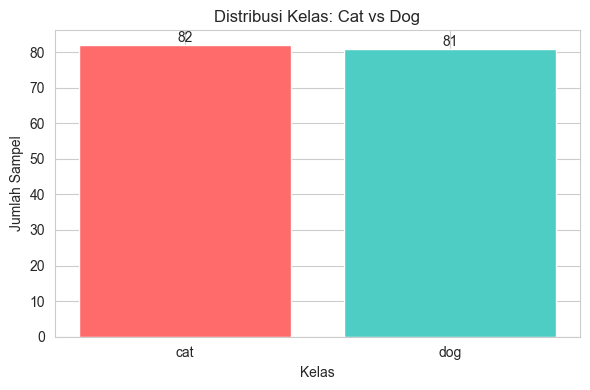
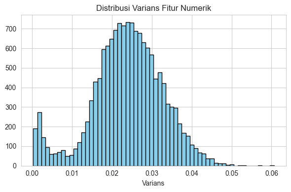
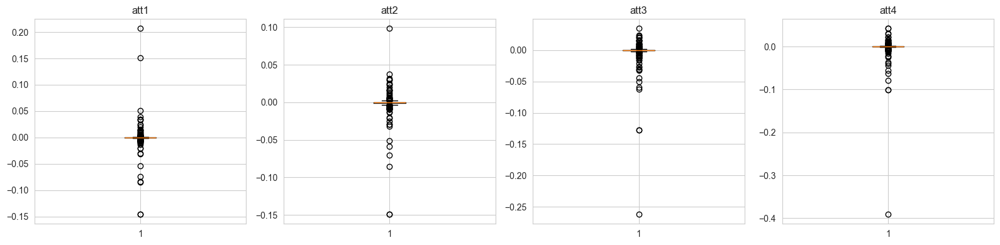

# Import library yang diperlukan
import os
import numpy as np
import pandas as pd
import matplotlib.pyplot as plt
import seaborn as sns
from scipy.io import arff
from sklearn.model_selection import train_test_split
from sklearn.preprocessing import StandardScaler, LabelEncoder
from sklearn.feature_selection import VarianceThreshold
from sklearn.pipeline import Pipeline
from joblib import dump
sns.set_style('whitegrid')
plt.rcParams['figure.dpi'] = 100
# Konfigurasi paths
WORKDIR = r"d:\Project Akhir PSD"
DATA_PATH = os.path.join(WORKDIR, 'dataset', 'CatsDogs_TRAIN.arff')
ARTIFACT_PIPELINE = os.path.join(WORKDIR, 'preprocessing_pipeline.joblib')
ARTIFACT_DATA = os.path.join(WORKDIR, 'data_processed.npz')
LABEL_ENCODER_PATH = os.path.join(WORKDIR, 'label_encoder.joblib')
FIG_DIR = os.path.join(WORKDIR, 'figures')
os.makedirs(FIG_DIR, exist_ok=True)
print('Working dir:', WORKDIR)
print('Data path:', DATA_PATH)
print('Figures dir:', FIG_DIR)
Working dir: d:\Project Akhir PSD
Data path: d:\Project Akhir PSD/dataset/CatsDogs_TRAIN.arff
Figures dir: d:\Project Akhir PSD/figures
1. Muat dataset#
Muat file ARFF dan konversi ke pandas.DataFrame. Tampilkan beberapa baris awal dan tipe data.
# Muat ARFF
data, meta = arff.loadarff(DATA_PATH)
df = pd.DataFrame(data)
print('Shape:', df.shape)
print('\nContoh baris:')
print(df.head())
print('\nTipe data (sample kolom):')
print(df.dtypes[:10])
---------------------------------------------------------------------------
FileNotFoundError Traceback (most recent call last)
Cell In[2], line 2
1 # Muat ARFF
----> 2 data, meta = arff.loadarff(DATA_PATH)
3 df = pd.DataFrame(data)
5 print('Shape:', df.shape)
File ~/.local/lib/python3.12/site-packages/scipy/io/arff/_arffread.py:802, in loadarff(f)
800 ofile = f
801 else:
--> 802 ofile = open(f)
803 try:
804 return _loadarff(ofile)
FileNotFoundError: [Errno 2] No such file or directory: 'd:\\Project Akhir PSD/dataset/CatsDogs_TRAIN.arff'
2. Pemeriksaan kualitas data#
Periksa missing values dan duplikat. Jika ada duplikat persis, akan di-drop untuk reproducibility.
# Pemeriksaan missing dan duplikat
missing_count = df.isnull().sum().sum()
duplicate_count = df.duplicated().sum()
print('Total missing values:', missing_count)
print('Total duplicate rows:', duplicate_count)
if duplicate_count > 0:
print('\nContoh duplikat:')
print(df[df.duplicated()].head())
df = df.drop_duplicates().reset_index(drop=True)
print('\nSetelah drop duplicates, shape:', df.shape)
Total missing values: 0
Total duplicate rows: 1
Contoh duplikat:
att1 att2 att3 att4 att5 att6 att7 \
145 -0.000854 -0.000397 0.000061 0.000031 -0.000122 -0.000244 -0.000275
att8 att9 att10 ... att14765 att14766 att14767 \
145 -0.000031 0.000183 -0.000153 ... 0.07608 -0.007355 -0.067078
att14768 att14769 att14770 att14771 att14772 att14773 target
145 -0.127411 -0.185608 -0.206787 -0.201782 -0.182892 -0.139831 b'Dog'
[1 rows x 14774 columns]
Setelah drop duplicates, shape: (163, 14774)
3. Identifikasi fitur dan label#
Pisahkan fitur numerik dan kolom kategorikal. Konversi label dari bytes ke string jika diperlukan, dan standarisasi label (lower-case).
# Identifikasi kolom
numerical_cols = df.select_dtypes(include=[np.number]).columns.tolist()
categorical_cols = df.select_dtypes(include=['object']).columns.tolist()
label_col = categorical_cols[0] if categorical_cols else None
print('Jumlah fitur numerik:', len(numerical_cols))
print('Kolom kategorikal:', categorical_cols)
print('Label column:', label_col)
# Jika label berupa bytes (mis. b'Cat'), decode
if label_col is not None:
if isinstance(df[label_col].iloc[0], (bytes, bytearray)):
df[label_col] = df[label_col].apply(lambda x: x.decode('utf-8') if isinstance(x, (bytes, bytearray)) else x)
print('Label di-decode dari bytes ke string')
# Standardisasi label
if label_col is not None:
df[label_col] = df[label_col].astype(str).str.strip().str.lower()
print('Distribusi label:')
print(df[label_col].value_counts())
Jumlah fitur numerik: 14773
Kolom kategorikal: ['target']
Label column: target
Label di-decode dari bytes ke string
Distribusi label:
target
cat 82
dog 81
Name: count, dtype: int64
4. Visualisasi untuk verifikasi#
Tambahkan beberapa visualisasi untuk membantu memeriksa kualitas dan sifat fitur:
Distribusi kelas
Histogram varians fitur numerik
Boxplot untuk beberapa fitur contoh
# 4.1 Distribusi kelas
class_counts = df[label_col].value_counts()
fig, ax = plt.subplots(figsize=(6,4))
ax.bar([str(x) for x in class_counts.index], class_counts.values, color=['#FF6B6B','#4ECDC4'])
ax.set_title('Distribusi Kelas: Cat vs Dog')
ax.set_xlabel('Kelas')
ax.set_ylabel('Jumlah Sampel')
for p in ax.patches:
ax.annotate(f"{int(p.get_height())}", (p.get_x()+p.get_width()/2., p.get_height()), ha='center', va='bottom')
plt.tight_layout()
fig.savefig(os.path.join(FIG_DIR, 'class_distribution.png'))
plt.show()
# 4.2 Histogram varians fitur
variances = df[numerical_cols].var(axis=0)
fig, ax = plt.subplots(figsize=(6,4))
ax.hist(variances, bins=60, color='skyblue', edgecolor='black')
ax.set_title('Distribusi Varians Fitur Numerik')
ax.set_xlabel('Varians')
plt.tight_layout()
fig.savefig(os.path.join(FIG_DIR, 'variance_histogram.png'))
plt.show()
# 4.3 Boxplot contoh 4 fitur
display_feats = numerical_cols[:4]
fig, axes = plt.subplots(1, len(display_feats), figsize=(4*len(display_feats),4))
for i, feat in enumerate(display_feats):
axes[i].boxplot(df[feat].dropna())
axes[i].set_title(feat)
plt.tight_layout()
fig.savefig(os.path.join(FIG_DIR, 'boxplots_first4.png'))
plt.show()
print('Visualisasi disimpan di:', FIG_DIR)



Visualisasi disimpan di: d:\Project Akhir PSD\figures
5. Seleksi fitur sederhana#
Untuk mengurangi fitur yang hampir konstan kita gunakan VarianceThreshold. Ini ringan dan cepat.
# VarianceThreshold untuk menghapus fitur hampir konstan
vt = VarianceThreshold(threshold=1e-6)
try:
vt.fit(df[numerical_cols])
support_mask = vt.get_support()
kept_features = [f for f, keep in zip(numerical_cols, support_mask) if keep]
print('Fitur awal:', len(numerical_cols), '-> Dipertahankan:', len(kept_features))
except Exception as e:
print('VarianceThreshold gagal:', e)
kept_features = numerical_cols
numerical_cols_selected = kept_features
Fitur awal: 14773 -> Dipertahankan: 14773
6. Split data (stratified 80/20) dan encoding target#
Bagi data menjadi training dan test set (80/20) dengan stratified split untuk menjaga proporsi kelas.
# Siapkan X dan y
X = df[numerical_cols_selected].values
y = df[label_col].values
# Encode label ke integer
le = LabelEncoder()
y_encoded = le.fit_transform(y)
print('Kelas:', list(le.classes_))
# Stratified split
X_train, X_test, y_train, y_test = train_test_split(X, y_encoded, test_size=0.20, stratify=y_encoded, random_state=42)
print('Bentuk train:', X_train.shape, 'Bentuk test:', X_test.shape)
# Simpan split untuk reproduksi
np.savez_compressed(ARTIFACT_DATA, X_train=X_train, X_test=X_test, y_train=y_train, y_test=y_test, label_classes=le.classes_)
print('Tersimpan:', ARTIFACT_DATA)
Kelas: ['cat', 'dog']
Bentuk train: (130, 14773) Bentuk test: (33, 14773)
Tersimpan: d:\Project Akhir PSD\data_processed.npz
7. Membangun pipeline preprocessing dan menyimpan artifact#
Pipeline standar: scaler (StandardScaler). VarianceThreshold sudah dipakai sebelumnya; jika ingin, PCA dapat ditambahkan.
# Susun pipeline
components = []
if len(numerical_cols_selected) < len(numerical_cols):
components.append(('variance', VarianceThreshold(threshold=1e-6)))
components.append(('scaler', StandardScaler()))
# components.append(('pca', PCA(n_components=100, random_state=42))) # opsional
pipe = Pipeline(components)
# Fit pipeline pada data train
pipe.fit(X_train)
# Simpan pipeline dan label encoder
dump(pipe, ARTIFACT_PIPELINE)
dump(le, LABEL_ENCODER_PATH)
print('Pipeline tersimpan di:', ARTIFACT_PIPELINE)
print('Label encoder tersimpan di:', LABEL_ENCODER_PATH)
Pipeline tersimpan di: d:\Project Akhir PSD\preprocessing_pipeline.joblib
Label encoder tersimpan di: d:\Project Akhir PSD\label_encoder.joblib
8. Verifikasi singkat dan kesimpulan#
Transform beberapa sampel dan tampilkan ringkasan. Catatan langkah berikutnya untuk modeling.
# Verifikasi transformasi
X_sample_trans = pipe.transform(X_train[:5])
print('Bentuk hasil transform (contoh):', X_sample_trans.shape)
print('\nRingkasan:')
print(' - Preprocessing pipeline:', ARTIFACT_PIPELINE)
print(' - Processed arrays:', ARTIFACT_DATA)
print(' - Label encoder:', LABEL_ENCODER_PATH)
print('\nLangkah selanjutnya: latih model menggunakan file processed arrays dan pipeline yang sama.')
Bentuk hasil transform (contoh): (5, 14773)
Ringkasan:
- Preprocessing pipeline: d:\Project Akhir PSD\preprocessing_pipeline.joblib
- Processed arrays: d:\Project Akhir PSD\data_processed.npz
- Label encoder: d:\Project Akhir PSD\label_encoder.joblib
Langkah selanjutnya: latih model menggunakan file processed arrays dan pipeline yang sama.
Selesai — notebook preprocessing siap dipakai untuk tahap modeling.